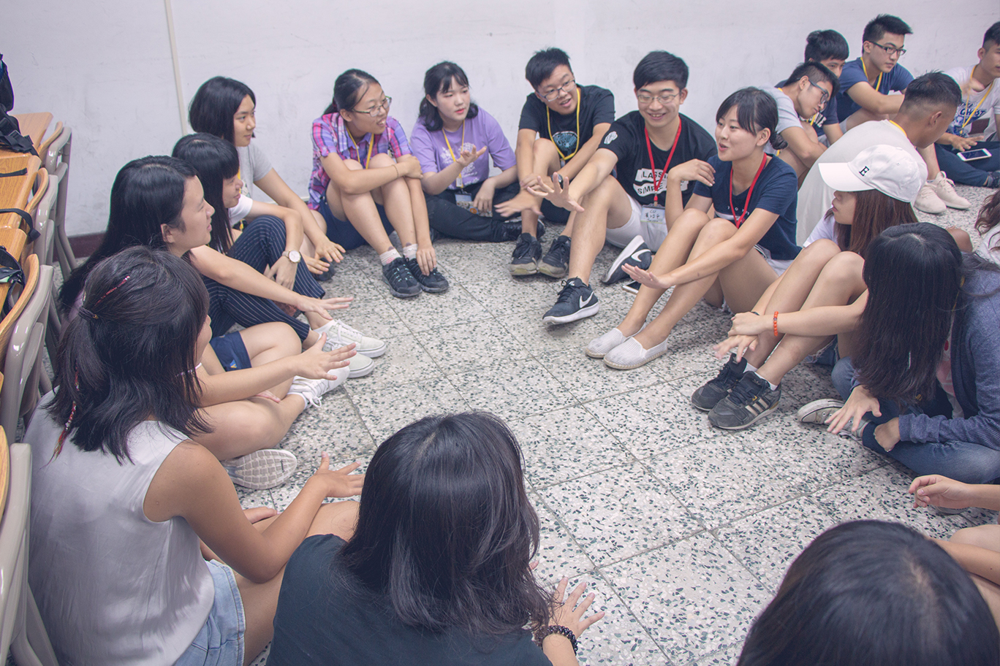

二零一八留港帶你滑行-Pre O活動
Hong Kong Taiwanese Student Association
Pre O Camp 2018
隨著赴港就讀的台灣學子與日俱增，留港台灣學生會每年都舉辦新生營隊，透過集合各校學長姐及學弟妹進行經驗分享及交流，也藉由精彩活動讓新生們認識彼此，建立友誼，讓赴港求學之路不孤單。
今年的活動在新生們踴躍報名下，於八月十一日在台中中興大學如火如荼展開。首先以分組的團康遊戲揭開活動序幕，藉由破冰舒緩新生們彼此陌生的氣氛，也讓各小組培養默契。接下來是今年特別設計的活動，新生們依據自己即將就讀的院系分組，藉由各院系學長姐們的經驗及生存技分享，不但減少因面對新環境產生的無形壓力，也使學弟妹更清楚了解自己未來即將面對的挑戰以及應變對策，將所有先前的憂慮轉換為實際的應對及準備。
在中興大學附近享用完午餐後，彼此的熟悉讓活動得以更熱烈進行。今年設計了和以往不同的有趣遊戲，以用手機搶答的方式，讓新生們了解關於香港的生活小知識、港鐵路線及特殊的站名、當然還有令人嚮往的港式美食和景點，使新生對於在香港的生活有更深的認識和期待。在這些活動中，新生們從彼此陌生到熟悉，最後也和學長姐們打成一片，讓炎熱的暑氣因為這樣的熱情變得溫暖而不燙。

一天的時間不算短也不算長，相信經過不多也不少的活動後緣分有了難得的開始，而在分別前夕拍攝的大合照中，每一抹燦爛的微笑映著年輕血脈的光芒，包含面對即將展開的旅程增加的自信和期待。各位親愛的學弟妹們，希望像今天這樣的時光能成為往後生活的後盾，留港成員會和你們同在，不斷以精彩活動讓各位尋得歸屬感，以及遊子身處他鄉不斷奮鬥的力量。
文：Jennifer Lai | 圖：留港台灣學生會